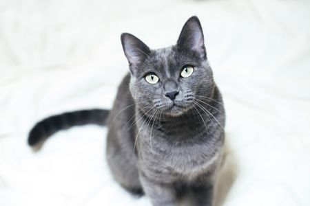
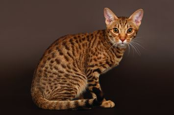
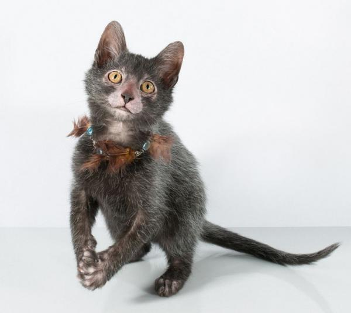

Persian Cat
The Persian cat is a long-haired breed of cat characterized by its round face and short muzzle. It is also known as the "Persian Longhair" in the English-speaking countries. In the Middle East, region they are widely known as "Iranian cat" and in Iran they are known as "Shirazi cat". The first documented ancestors of the Persian were imported into Italy from Iran (historically known as Persia in the west) around 1620.[1][better source needed] Recognized by the cat fancy since the late 19th century, it was developed first by the English, and then mainly by American breeders after the Second World War. Some cat fancier organizations' breed standards subsume the Himalayan and Exotic Shorthair as variants of this breed, while others treat them as separate breeds.
Russian Blue
The Russian Blue is a cat breed that comes in colors varying from a light shimmering silver to a darker, slate grey. They develop close bonds with their owners and are sought out as pets due to their personalities, beauty and coat. It is their short, dense coat which has been the hallmark of the Russian breed for more than a century. The dense coat stands out from the body and one can draw patterns in the coat that will stay until one smoothes them out again. They are also considered to be hypoallergenic
Ocicat
The Ocicat is an all-domestic breed of cat which resembles a wild cat but has no wild DNA in its gene pool. The breed is unusual in that it is spotted like a wild cat but has the temperament of a domestic animal. It is named for its resemblance to the Ocelot. The breed was established from Siamese and Abyssinian stock; later, American Shorthairs (silver tabbies) were added to the mix and gave the breed their silver color, bone structure and distinct markings.
Lykoi
The Lykoi is a natural mutation from a domestic shorthair that has the appearance of a werewolf. The mutation has occurred in domestic cats over the last 20 years. DNA testing has been done by UC Davis to confirm that the cats do not carry the Sphynx/Devon gene. The Lykoi breed was developed in Vonore, Tennessee and is said to resemble a werewolf. The word "lykoi" means 'wolves' in Greek.

Exotic Shorthair
The Exotic Shorthair is a breed of cat developed to be a short-haired version of the Persian. The Exotic is similar to the Persian in many ways, including temperament and conformation, a flat nose and face with the exceptions of the short dense coat.[1] In the late 1950s, the Persian was used as an outcross by some American Shorthair breeders. This was done in secret in order to improve their body type, and crosses were also made with the Russian Blue and the Burmese. The crossbreed look gained recognition in the show ring, but unhappy American Shorthair breeders successfully produced a new breed standard that would disqualify American Shorthairs that showed signs of crossbreeding. One American Shorthair breeder who saw the potential of the Persian/American Shorthair cross proposed and eventually got the Cat Fanciers' Association judge and American Shorthair breeder Jane Martinke to recognize them as a new breed in 1966, under the name Exotic Shorthair. In 1987, the Cat Fanciers' Association closed the Exotic to shorthair outcrosses, leaving Persian as the only allowable outcross breed.